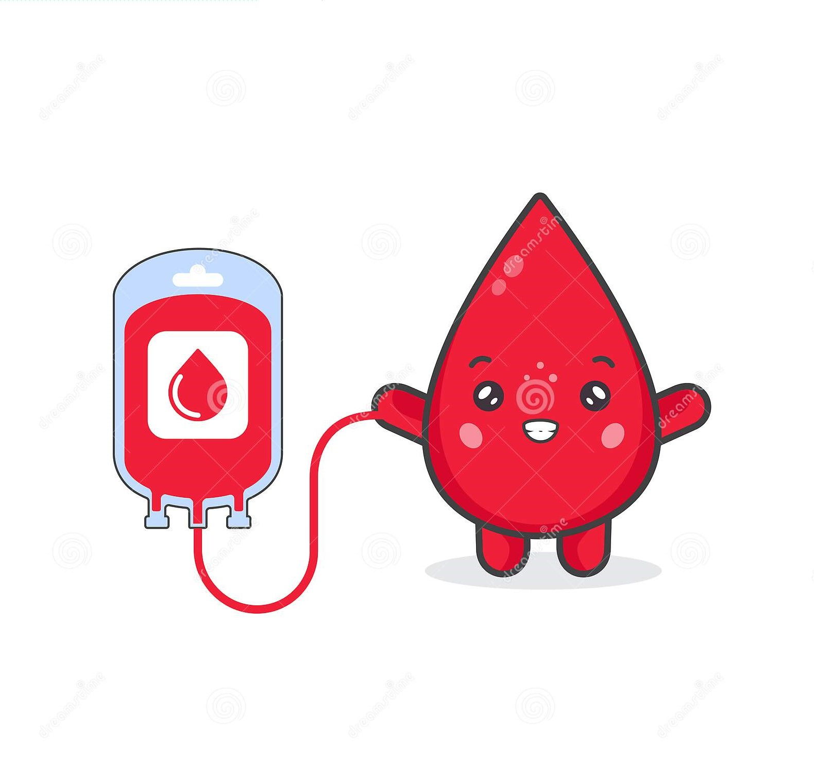

Why are we here for ?
Blood Bank Management System (BBMS) is a browser based system that is designed to store, process, retrieve and analyze information concerned with the administrative and inventory management within a blood bank. This project aims at maintaining all the information pertaining to blood donors, different blood groups available in each blood bank and help them manage in a better way. Aim is to provide transparency in this field, make the process of obtaining blood from a blood bank hassle free and corruption free and make the system of blood bank management effective.

Features
Blood Donation Camp & Camp Organiser Management.
Donor Management - Donor Registration, Managing donor database, recording their physical and medical statistics.
Inventory management in blood bank for storage and issuance of blood.
Blood requisition and issuance of blood.
Online transfer of blood from one blood bank to another
Discarding of expired and unsuitable blood (Less Qty, Reactive, Clotting. Hemolysis) Being a web based system, can be implemented throughout the state.
Separate user accounts can be created for each blood bank
Patient Register/Blood Sample Receiving Register, Donor Register, Blood Issue Register and Discarded Blood report.
Fridge Wise Stock Position and Printing of Fridge Stickers.
List of Donors who are eligible for donation on a particular date with contact Number Camp Wise Donor List and Printing of Donor Cards.